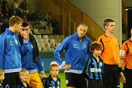

Emile Van Nevel
Hallo, Ik ben Emile Van Nevel, 16 jaar oud en welkom op mijn eerste website!

Ik heb 1 broer, Jules die 13 jaar is. Vroeger in de lagere school zat ik in Landegem, daarna ben ik naar Sint-Hendrik gegaan in Deinze en in het 3de middelbaar ben ik overgestapt naar Sint-Vincentius waar ik nog steeds school loop.
